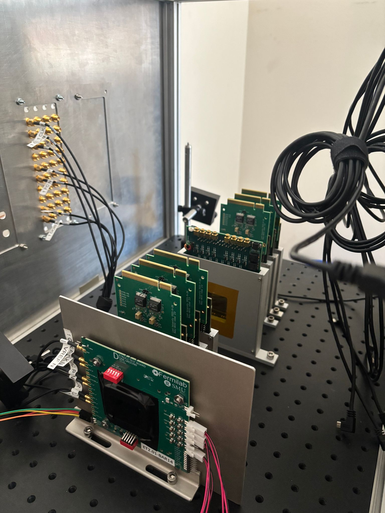

01
Particle Accelerator Sensor Array
Designed a vacuum-based alignment jig for the Silicon Vertex Detector on the Electron Ion Collider, hitting 0.14mm precision across ~2,300 sensor mountings. Delivered 20 silicon PCB arrays validated at CERN and now in active use at LBNL.
READ BLOG POST ↗